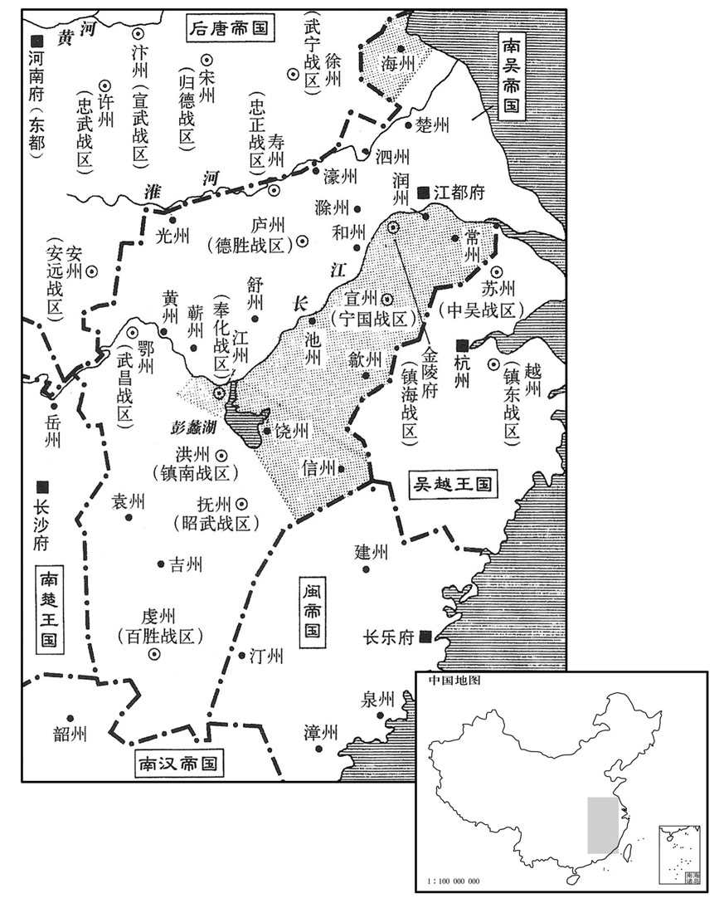

公元935年资治通鉴：本年记事、原文与白话对照
按原书编年位置阅读；追叙和史论不等于本年发生的事件。白话采用所据译本，缺译不以生成译文补齐。
卷279 · 本年记事
公元935年 · 后唐潞王清泰二年
二年〔（乙未、九五五）〕
上传原文件年头的数字有误；按本卷年号与相邻年份定位为935年，原字保留。
上传原文的注释括号有异常，字符原样保留；无法可靠划分的段落默认全文显示。
本年事件索引（现代整理）
- 闽国大赦改元永和
- 蜀国大赦
- 后唐任范延光为宣武节度使兼中书令
- 夏州节度使李彝超病卒由其兄李彝殷权领军州
- 蜀主孟昶尊母李氏为皇太后
- 后唐追尊末帝生母魏氏为宣慧皇太后
- 闽主王昶立陈淑妃为皇后
- 后唐任赵延寿为忠武节度使兼枢密使
- 后唐任李彝殷为定难节度使
- 后唐追赠钱元瓘生母陈氏为晋国太夫人
- 后唐任安审琦为顺化节度使
- 史在德批评朝臣后明宗下诏保护言者
- 吴任徐景迁为同平章事并令陈觉辅导
- 蜀任毋昭裔为宰相
- 后唐任韩昭胤为相刘延皓任枢密使
- 契丹入寇新州振武
- 后唐赐杨檀名杨光远
- 吴德胜节度使柴再用卒
- 契丹入寇应州
- 石敬瑭暗中打探明宗动向谋求自保
- 契丹频繁侵边后唐征调粮草致河东民众流离
- 石敬瑭斩杀三十六名军士首领防范军中呼喊
- 后唐诏令盗窃及纵火者一律处死
- 闽王王继鹏请求迎娶宫人李春燕
- 后唐任刘延皓为天雄节度使
- 后唐任张敬达为北面行营副总管以分石敬瑭兵权
- 卢文纪等请求设延英殿以便君臣密议获明宗允准
- 吴徐知诰告诫徐知谔勤于政务后仍厚待之
- 吴大赦改元天祚
- 后唐任房暠为枢密使但中枢实权渐归刘延朗
- 蜀军攻陷金州水寨后全师郁退兵陈知隐被处斩
- 闽主宠信归守明陈皇后与其私通
- 李仿杀害闽国重臣李可殷闽主病中被弑王继鹏即位
- 闽惠宗遗孀清远公主留在南汉为夫守丧
- 高从诲礼贤士并委任梁震
- 孙光宪劝高从诲勿效楚王马希范奢侈
- 梁震辞官归隐高从诲将政事交孙光宪
- 司马光称赞孙光宪高从诲梁震各有可取
- 吴进封徐知诰为齐王加尚父太师等尊号
- 闽王王昶与林延皓等设计杀李仿其部众焚门逃吴越
- 叶翘劝谏闽主不纳后辞官归乡
- 后唐因刘延朗索贿改任马全节为潢海留后
- 后唐任韩昭胤为护国节度使
- 后唐任冯道为司空
- 闽主王昶尊陈守元为天师并任其干预朝政

本年形势与背景参考图
春，正月，丙申朔，闽大赦，改元永和。
春季，正月，丙申朔（初一），闽国实行大赦，改年号为永和。
二月，丙寅朔，蜀大赦。
二月，丙寅朔（初一），蜀国大赦。
甲戌，以枢密使、天雄节度使兼侍中范延光为宣武节度使兼中书令。
甲戌（初九），末帝任用枢密使、天雄节度使兼侍中范延光为宣武节度使兼中书令。
丁丑，夏州节度使李彝超上言疾病，〔夏，户雅翻。上时，掌翻。疾甚为病。〕以兄行军司马彝殷权佑军州事；彝超寻卒。
丁丑（十二日），夏州节度使李彝超上书说自己有病，让他哥哥行军司马李彝殷暂时主持军州事；李彝超不久就去世了。
戊寅，蜀主尊母李氏为皇太后。太后，太原人，本庄宗后宫也，以赐蜀高祖。〔孟知祥事庄宗，夙蒙亲任，故以后宫赐之。史详书李氏之所自来，以别于福庆长公主。〕
戊寅（十三日），蜀主孟昶尊上母亲李氏为皇太后。李太后是太原人，本来是后唐庄宗后宫宫女，用来赐给蜀高祖孟知祥为妻的。
己丑，追尊帝母鲁国夫人魏氏曰宣慧皇太后。〔魏，本平山王氏妇也，少寡，与帝皆为明宗所掠。〕
己丑（二十四日），末帝李从珂追尊他的母亲鲁国夫人魏氏称宣宪皇太后。
闽主立淑妃陈氏为皇后。初，闽主两娶刘氏，皆士族，美而无宠。陈后，本闽太祖侍婢金凤也，陋而淫，闻主嬖之，〔嬖，皮义翻，又也计翻。〕以其族人守恩、匡胜为殿使。〔殿使，闽所置官。〕
闽国主王立淑妃陈氏为皇后。起初，闽主两度娶刘氏为妻，都是士族，虽然长得美丽但却不得宠爱。陈皇后本来是闽太祖王审知的侍婢，名叫金凤，长得丑陋而且淫荡，但闽主王溺爱她，并任用她的本家陈守恩、陈匡胜为殿使。
三月，辛丑，以前宣武节度使兼侍中赵延寿为忠武节度使兼枢密使。
三月，辛丑（初七），末帝任用前宣武节度使兼侍中赵延寿为忠武节度使兼枢密使。
以李彝殷为定难节度使。〔李彝殷后避宋朝庙讳，改名彝兴，其小则李继捧、李继迁也。难，乃旦翻。〕
末帝任用李彝殷为定难节度使。
己酉，赠吴越玒元瓘母陈氏为晋国太夫人。元瓘性孝，尊体母党，厚加赐与，而未尝迁官，授以重任。
己酉（十五日），后唐朝廷封赠吴越王钱元的母亲陈氏为晋国太夫人。钱元性情孝顺，对母亲的族属很尊敬尽礼，赐赏很丰厚，但是从未给他们升官和授予重任。
壬戌，以彰圣都指挥使安审琦领顺化节度使。〔五代会要：清泰元年六月，改捧圣马军为彰圣左右军，严卫步军为宁卫左、右军。梁尝改沧州义昌军为顺化军，后唐后唐之旧，为棋海军。前此吴越钱元簔判明州，领顺化节度使；审琦所领盖楚州顺化军也。〕审琦，金全之子也。〔安金全，化北旧将。〕
壬戌（二十八日），末帝任用彰圣都指挥使安审琦领受顺化节度使。安审琦是安金全的儿子。
太常丞史在德，性狂狷，上书历诋内外文武之士，〔薛史载在德书，其略曰：「朝廷任事率多滥进；称武士者不闲计策，虽被坚执锐，战则弃甲。穷则背军。称文士者鲜有艺能，多无士行，问策谋则杜口，作文字则情人。所谓虚设具员，枉费国力。逢陛下维新之运，是文明革弊之秋。臣请应内外所管军人，凡胜衣甲者，请宣下本军大将，一一考试武艺短长，补谋深浅，居下位有将才者便拔为大将，居上位无将略者移之下军。其东班臣僚，请内出策题下中书令宰臣面试，如下位有大才须拔居大位，无大才即移之下僚。」狷，吉掾翻。诋，丁礼翻。〕请徧加考试，黜陟能否；执政及朝士大怒，卢文纪及补阙刘涛、杨昭俭等皆请加罪。帝谓学士马胤孙曰：「朕新临天下，宜开言路；若朝士以言获罪，谁政言者！卿为朕作诏书，宣朕意。」〔马胤孙时为翰林学士。为，于伪翻。〕乃下诏，略曰：「昔魏征请常皇甫德参，〔见一百九十四卷太宗贞观八年。〕今涛等请黜史在德；事同言异，何其远哉！在德情在倾输，安可责也！」〔倾输，谓倾其胸腹所怀，而输忠于上。〕昭俭，嗣复之曾孙也。〔杨嗣复，文宗时为相。〕
太常丞史在德，性格狂放不羁，上书诋毁朝廷内外的文武之士，请求曾遍进行考试，从而黜拙拔能；执政者及朝士大火恼火，卢文纪及补阙刘涛、杨昭俭等都请求末帝治他的罪。末帝对学士马胤孙说：“朕刚刚临御天下，应该开启言路，如果朝士因为说话而获致罪名，还有谁敢说话呢？请你替朕起草诏书，宣示朕的意思。”于是下了诏书，大意是说：“从前魏徵请求唐太宗奖赏皇甫德参，现在刘涛等人请求罢黜史在德，事情相同而评价两样，为什么相差这样远，在德的心情是要倾吐自己心里想说的话，怎么能责备他呢！”杨昭俭是唐文宗时宰相杨嗣复的曾孙。
吴加徐景迁同平章事、。右左右军事；徐知诰令尚书郎陈觉辅之，〔考异曰：江南录：「时光主权位日隆，中外皆知有代谢之势，而以吴主恭谨守道，欲待嗣君，先生次子景迁，吴主之伲也，先主钟爱特甚。齐丘使陈觉为景迁教授，为之声价。齐丘参决时政，多为不法，辄归过于嗣主而盛称景迁之美，几有夺嫡之计。所以然者，以吴主少而先主老，必不能待，怹日得，国授于景迁，易制，己为元老，咸权无上矣。此其夕为谋也。先生觉之，乃召齐丘如金陵以为己之副，遥兼申蔡节度使，无所关预，从容而已。」今从十国纪年。〕谓觉曰：「吾少时与宋子嵩论议，好相诘难，〔少，诗照翻。好，呼到翻。诘，去吉翻。难，乃旦翻。〕或吾拾子嵩还家，或子嵩拂衣而起。子嵩携衣笥望秦汭门欲去者数矣，吾常戒门者止之。〔宋齐丘，字子嵩。秦淮门，金陵城门。数，所角翻。〕吾今老矣，犹未徧达时事，况景迁年少当国，故屈吾子以诲之耳。」
吴国加封徐景迁为同平章事、知左右军事；徐知诰命令尚书郎陈觉辅助他，并且对陈觉说：“我年轻时与宋子嵩（齐丘）议论，喜欢相互问难，或者我停止争论放他回家，或者他拂衣而去。子嵩收拾衣箱眼望秦淮门想离我而去的情况有过好多次了，我常常告诫守门人不要放他走。我现在已经年纪大了，还没有能够对时事样样通晓，何况景迁年少担当国家大事，听以委屈您老先生来教导他啊。”
夏，四月，庚午，蜀以御史中丞龙门毋昭裔为中书侍郎、同平章事。〔龙门县，本汉皮氏县，后魏更名，唐属河中府。九域志：在府东北九十五里。毋，姓也，毋丘氏或为母氏，望出平昌、巨鹿。开元补阙有母景，洛阳人，一云吴人。毋，武夫翻。〕
夏季，四月，庚午（初六），蜀国任用御史中丞龙门人毋昭裔为中书侍郎、同平章事。
癸未，加枢密使、刑部尚书韩昭胤中书侍郎、同平章事。辛卯，以宣徽南院使刘延皓为刑部尚书，充枢密使。延皓，皇后之弟也。癸巳，以左领军卫大将军刘延朗为本卫上将军，充宣徽北院使，兼枢密副使。
癸未（十九日），末帝加封枢密使、刑部尚书韩昭胤中书侍郎、同平章事。辛卯（二十七日），任用宣徽南院使刘延皓为刑部尚书，充任枢密使。刘延皓是刘皇后的弟弟。癸巳（二十九日），任用左领军卫大将军刘延朗为本卫上将军，充任宣徽北院使，兼任枢密副使。
五月，丙申，契丹寇所州及振武。
五月，丙申（初三），契丹入侵新州及振武。
庚戌，赐振武节度使杨檀名光远。〔薛史载中书奏：「准天成三年正月敕。九庙讳但回避正文，其偏旁文字不在减少点画┴。今郑州节度使杨檀、檀州、金坛等名，酌情制宜，并请改之。其表章文案偏旁字缺点画，凡臣僚名涉偏旁亦请改名。」诏曰：「偏旁文字，音韵悬殊，止避正呼，不宜全改。杨檀宜赐名光远，余依旧。」按此以明宗庙讳「亶」字避偏旁也。杨檀时不镇定州，当从通鉴。〕
庚戌（十七日），末帝赐给振武节度使杨檀名字叫杨光远。
六月，吴德胜节度使兼中书令迤再用卒。先是，史官王振尝询其战功，〔先，悉荐翻。〕再用曰：「鹰犬微效，皆社稷之灵，再用何功之有！」竟不报。〔有功而不求闻，武人如迤再用者亦可称也。〕
六月，吴国德胜节度使兼中书令柴再用去世。以前，史官王振曾经询问他的战功，柴再用说：“鹰犬的细小作用，都是国家社稷的灵验，再用有什么功劳！”竟然没有上报。
契丹寇应州。
契丹侵扰应州。
河东节度使、北面节度使、北面总管石敬瑭既还镇，〔去年五月，帝令石敬瑭还太原。〕阴为自全之计。帝好咨访外事，〔好，呼到翻。〕常命端明殿学士李专美、翰林学士李崧、佑制诰吕琦、薛文遇、翰林天文赵延又等〔等之中世，司天台有天文博士二人，正八品下；天文观生九十人，天文生五十人，皆掌候天文。翰林天文，居翰林院以候天文者也。〕更直于中兴殿庭，兴语或至夜分。时敬瑭二子为内使，〔更，工衡翻。内使，内诸司使。按石敬瑭拒命之时，其子重殷为右卫上将军，重裔为皇城副使。〕曹太后则晋国长公主之母也，〔敬瑭妻魏国公主，是年四月进封晋国。长，知两翻。〕敬瑭赂太后左右，令伺帝之密谋，事无巨细皆知之。敬瑭多于宾客前自称羸瘠不堪为帅，〔羸，伦为翻。瘠，在亦翻。帅，所类翻。〕冀朝廷不之忌。
河东节度使、北面总管石敬瑭返归镇所后，暗中谋划如何保全自己。末帝喜欢访查咨询外边的事情，常常命令端明殿学士李专美、翰林学士李崧、知制诰吕琦、薛文遇、翰林天文赵延等轮换在中兴殿庭院值班，有时候同他们谈论到深夜。当时，石敬瑭的两个儿子任内使，曹太后则是石敬瑭之妻晋国长公主的母亲，石敬瑭贿赂太后的左右，让他们暗中侦查末帝的密谋，不论事情的大小他都能知道。石敬瑭常常在宾客面前自称病弱不能领兵为帅，希图朝廷不猜忌他。
时契丹屡寇北边，禁军多在幽、并，敬瑭与赵德钧求益兵运粮，朝夕相继。〔敬瑭求兵粮以实并州，赵德钧求兵粮以实幽州。〕甲申，诏借河东人有蓄积者菽粟。乙酉，诏镇州输绢五万匹于总管府，籴军粮，〔总管府在晋阳，石敬瑭时为北面马步军都总管故也。〕率镇冀人车千五百乘运粮于代州；〔九域志：镇州西北至代州六百二十里。乘，绳证翻。〕又诏魏博市籴。时水旱民饥，敬瑭遣使督趣严急，〔趣，读曰促。〕山东之民流散，〔此谓太行、常山之东。〕乱始兆矣。〔史叙致乱之由。〕
当时，契丹族频繁侵扰北部边界，守卫的禁军大多设防在幽州和并州，石敬瑭与赵德钧都请求朝廷增兵运粮，日夜相继不断。甲申（二十一日），朝廷下诏向河东有积蓄的人征借菽粟。乙酉（二十二日），下诏令镇州输纳绢五万匹给总管府，用来购买军粮，率领镇冀的人车一千五百辆运粮供给代州；又下诏令魏博开市购粮。当时水灾、旱灾使得百姓饥饿，石敬瑭派人督催缴纳非常严厉紧急，崤山以东的百姓流离失散，开始露出了动乱的兆头。
敬瑭将大军屯忻州，朝廷遣使赐军士夏衣，传诏抚谕，军士呼万岁者数四。〔时骄兵习于闻见，又欲扶立石敬瑭以希赏。〕敬瑭惧，幕僚河内段希尧请诛其唱首者，敬瑭命都押衙刘知远斩挟马都将李晖等三十六人以徇。希尧，怀州人也。帝闻之，益疑敬瑭。
石敬瑭率领大军屯驻忻州，朝廷派使臣赏赐军士夏衣，传布诏书加以抚慰，军士曾多次呼喊万岁。石敬瑭害怕，他的幕僚河内人段希尧请求杀了那些带头呼叫的，石敬瑭命令都押牙刘知远斩了挟马都将李晖等三十六人作为此事的宣示。段希尧是怀州人。末帝听说这些情况，更加怀疑石敬瑭。
壬辰，诏：“窃盗不计赃多少，并纵火强盗，并行极法。”
壬辰（二十九日），末帝下诏：“窃盗不论赃有多少，以及纵火强盗，都施行极刑。”
闽福王继鹘私于宫人李春燕，继鹘请之于陈后，后白闽主而赐之。
闽国福王王继鹏与宫人李春燕私通，王继鹏请求陈皇后把李春燕赐给他，陈皇后告诉闽主王而后赏赐给他。
秋，七月，以枢密使刘延皓为天雄节度使。
秋季，七月，末帝任用枢密使刘延皓为天雄节度使。
乙巳，以武宁节度使张敬达为北面行营副总管，将兵屯代州，以分石敬瑭之权。〔为令张敬达讨石敬瑭张本。〕
乙巳（十三日），末帝任用武宁节度使张敬达为北面行营副总管，领兵屯驻代州，用来分散石敬瑭的权力。
帝深以时事为忧，尝从容让卢文纪等以无所规赞。〔从，千容翻。〕丁巳，文纪等上言：「臣等每五日起居，与两班旅见，暂获对提扬，〔见，贤遍翻。两班者，文武官分为东西两班。书说命：说拜稽首曰：敢对提天子之休命。注云：对，答也。答受美命而称扬之。后人遂以面对为对提。〕侍卫满前，虽有愚虑，不敢敷陈。窃见前朝自上元以来，置延英殿，或宰相欲有奏论，天子欲有咨度，〔【章：十二行本「度」下有「皆非时召对」五字；乙十一行本同；孔本同；张校同；退斋校同。上元，唐肃宗年号。度，徒洛翻。〕旁无侍卫，故人得尽言。望复此故事，惟听机要之臣侍侧。」〔机要之臣，谓枢密。〕诏以「旧制五日起居，百俱退，宰相独升，若常事自可敷奏。或事应严密，不以其日，或异日听于合门奏牓子，当尽屏侍臣，〔屏，必郢翻，又卑正翻。〕于便殿相待，何必袭延英之名也！」
末帝因为时局常常感到忧虑，曾经很平和地责备过卢文纪等，批评他们没有提供什么规劝和赞同的建议。丁巳（二十五日），卢文纪等上奏说：“臣等每五天一次来问候主上的起居，与文武两班众臣共同进见，暂时得到对答的机会，而侍从保卫人员布满在眼前，虽然对事情有所考虑，也不敢陈说。我们想到前朝自从唐肃宗上元年间以后，设置延英殿，遇到宰相想有所论奏，或者天子要有所咨询商酌，旁边不设侍卫，所以人们能够把话都说出来。希望主上也能恢复前朝的这种做法，只让机要的大臣侍候在旁边。”末帝下诏书说：“旧制施行五日问起居时，百官都退场，只有宰相单独留下来，象平常的事情仍然可以陈奏。遇到有机密的事情，不按五天的期限，或者另选日期在阁门听取奏摺子，应当让侍臣都屏退，在便殿等候进见，何必要承袭延英殿的名义呢！”
吴润州团练使徐知谔，狎昵小，〔昵，尼质翻。〕游燕废务，作列肆于牙城西，〔贸，音茂。〕徐知诰闻之怒，召知谔，，左右诘责；知谔惧。或谓知诰曰：「忠武王最爱知谔，〔徐温谥忠武王。〕而以后事传于公。〔徐知诰之得政，在于定朱瑾之难；若徐温临没而传政于知诰，非本心也。事见二百七十六卷明宗天成二年。〕往年知诣失守，〔谓自升州召知诣还提州也。〕论议至今未息。借使知谔治有能台，〔治，直吏翻。〕训兵养民，于公何利﹖」知诰感悟，待之加厚。
吴国润州团练使徐知谔，亲昵狎近小人，游赏宴集，废弃正务，在牙城以西仿造排列着商肆的市场，亲自去做商沽交易。徐知诰听说后发怒，找来徐知谔的随从盘问责骂他们；徐知谔很害怕。有人告诉徐知诰说：“尊翁忠武王徐温在世时最喜欢知谔，然而却把后来的大业传给了你。前几年知询失去镇所，议论到现在还没有停息。如果知谔治理政务有能干的名声，训练武备，休养百姓，对您有什么好处呢？”徐知诰有所领悟，对待徐知谔更加宽厚。
九月，丙申，吴大赦，改元天祚。
九月，丙申（初四），吴国实行大赦，改年号为天祚。
己酉，以宣徽南院使房暠为刑部尚书，充枢密使；〔暠，古老翻。〕宣徽北院使刘延朗为南院使，仍兼枢密副使。于是延朗及枢密直学士薛文遇等居中用事，暠与赵延寿虽为使长，〔枢密使为枢密院之长。长，知两翻。〕其听用之言什不三四。暠随势可否，不为事先；每幽并遣使入奏，枢密诸人环坐议之，暠多俛首而寐，比觉，引颈振衣，则使者去矣。〔俛，音免。比，必利翻。觉，居效翻。〕启奏除授，一归延朗。〔为刘延朗受诛于晋，房暠获全张本。然二人皆帝之亲臣也，延朗之好货非也，暠之避事亦非矣。〕诸方镇、刺史自外入者，必先赂延朗，后议贡献，赂厚者先，得内地；赂薄者晚，得边陲。由于诸将帅皆怨愤，帝不能察。
己酉（十七日），末帝任用宣徽南院使房为刑部尚书，充任枢密使，宣徽北院使刘延朗任为南院使，仍兼任枢密副使。从此刘延朗及枢密直学士薛文遇等把持朝中事务，房与赵延寿虽然做枢密院的首长，但他们的意见，被采用的不过十分之三四。房随势应称，什么事都不先拿出意见。每当幽州、并州派使者来朝廷奏事，枢密院的几位大臣环坐而讨论，房常常低着头打盹，等他醒来，伸着脖子，理理服装后，那时使者已经走了。是否启奏皇帝和任免职务，一律取决于刘延朗。各处方镇、刺史从外莎藩入朝的，必然先贿赂刘延朗，然后议论一下各家所贡献的礼物，贿赂多的先办，得到内地职差；贿赂少的后办，只能得到边远的职差。因此，各地将帅都怨愤不满，而末帝不能察觉。
蜀金州防御使全师郁寇金州，拔水寨。〔按元和郡县志，汉水去金州城百步，故唐置水寨以防蜀兵。〕城中兵纔千人，都监陈知隐托他事将兵三百沿流遁去；防御使马全节罄私财以给军，出奇死战，蜀兵乃亡。戊寅，诏斩知隐。
蜀国任命的金州防御使全师郁攻掠金州，攻下了水寨。城中的守兵只有一千人，都监陈知隐推托有别的事；带兵三百沿着汉水逃遁而去；防御使马全节把自己的全部私财都拿出来赏供军队，出奇兵死命战斗，蜀兵才退回去。戊寅（疑误），末帝下诏斩了陈知隐。
初，闽主有幸臣曰归守明，出入卧内；闽主冕年得风疾，陈后与守明及百工院使李可殷私通，国人皆恶之，莫敢言。〔恶，乌路翻。〕
从前，闽主王有个宠幸之臣名叫归守明，可以出入闽主的卧室；闽主晚年得了风寒伤身的疾病，陈皇后与归守明及百工院使李可殷私通，闽国人都厌恶他们，但是，不敢揭发。
可殷尝谮皇城使李仿于闽主，后族陈匡胜无礼于福王继鹘，仿及继鹘皆恨之。闽主疾甚，继鹘有喜色。仿以闽主为必不起，冬，十月，己卯，使壮士数人持白梃击李可殷，杀之，〔梃，待鼎翻。〕中外震惊。庚辰，闽主疾少间，〔间，如字。〕陈后诉之。闽主力疾视朝，诘可殷死状，仿惧而出，俄顷，引部兵鼓噪入宫。闽主闻变，匿于九龙帐下，〔闽主命锦工作九龙帐，国人歌之曰：「谁谓九龙帐，惟贮一归郎。」归郎，谓守明也。〕乱兵刺之而出。〔刺，七亦翻。〕闽主宛转宋绝，宫人不忍其苦，为绝之。〔为绝其命也。为，于伪翻。〕仿与继鹘杀陈后、陈守恩、陈匡胜、归守明及继鹘弟继韬；继韬素与继鹘相恶故也。辛巳，继鹘称皇太后令监国，是日，即皇帝位。〔皇太后，璘母黄氏也。继鹘，璘之长子。〕更名昶。〔更，工衡翻。〕谥其父曰齐肃明孝皇帝，庙号惠宗。既而自称权知福建节度事，遣使春表于唐，大赦境内；立李春燕为贤妃。
李可殷曾经在闽主面前说过皇城使李的坏话，皇后的本家陈匡胜对福王王继鹏没有礼仪，李和王继鹏都怨恨这些人。闽主病情发展严重，王继鹏面有喜色。李以为闽主的病必定不能再起，冬季，十月，己卯（十八日），指使几个身体强壮的人，手持棍棒去袭击李可殷，把他杀了，朝廷内外震惊。庚辰（十九日），闽主的病稍微见好，陈皇后把这件事告诉了闽主。闽主带病勉强临朝视事，查究李可殷是怎么死的。李恐惧而出，一会儿率领他的部属兵卒，吵嚷喧哗地进入宫中。闽主听见变故，躲在九龙帐底下，乱兵刺了他而后散出。闽主受了伤，痛苦呻吟而没有死，宫人看了不忍心让他受这样的痛苦，便为他断气而死。李与王继鹏杀了陈皇后、陈守恩、陈匡胜、归守明及王继鹏的弟弟王继韬；因为王继韬素来同王继鹏相互厌恶。辛巳（二十日），王继鹏声称皇太后令他监国，就在当天，即皇帝位，改名王昶。给其父王上谥号为齐肃明孝皇帝，庙号惠宗。接着又自称暂时主持福建节度事，派遣使者向后唐朝廷上表，在其辖境内实行大赦；册立李春燕为贤妃。
初，闽惠宗娶汉主女清远公主，〔广州有清远县。〕使宦者闽清林延遇置邸于番禺，〔唐志无闽清县，盖王氏始分置也。九域志：闽清县属福州，在州西北一百五十里。宋白曰：唐贞元元年割候官县十乡为梅溪场，梁干化元年改为闽清县。番，音潘。〕专掌国信。汉主赐以大第，禀赐甚厚，数问以闽事。〔禀，笔锦翻，给也。数，所角翻。〕延遇不对，退，谓人曰：「去闽语闽，去越语越，处人宫禁，可如是乎！」〔处，昌吕翻。〕汉主闻而贤之，以为内常侍，使钩校诸司事。延遇闻惠宗遇弒，求归，不许，素服向其国三日哭。〔史言林延遇不忘旧君。〕
起初，闽惠宗王娶南汉主刘龚的女儿清远公主，派宦官闽清人林延遇在番禺建立府邸，专门掌握国内的信息。南汉主赐给他大的宅第，供给赏赐都很丰厚。多次向他讯问闽国的事情，林延遇不回答，退下来后，对人说：“离开闽国就谈论闽，离开越国就谈论越，居处在人家的宫内，可以这样吗！”南汉主听到这话后认为他是贤士，用他为内常侍，让他联系校核诸司的事情。林延遇听说惠宗王被弑，要求归闽，没有得到南汉主的允许，穿了丧服向着他的国家方向哭了三天。
荆南节度使高从诲，性明达，亲礼贤士，委任梁震，以兄事之；震常谓从诲为郎君。〔门生故吏呼其主之子为郎君。梁震事高季兴，从诲之父也，故以郎君呼从诲。〕
荆南节度使高从诲，性情通达，亲近和礼敬贤士，委任梁震，把他作为兄长看待；梁震常常称呼高从诲为郎君。
楚王希范好奢靡，〔好，呼到翻；下玩好同。〕游谈者共夸其盛。从诲谓僚佐曰：「如马王可谓大丈夫矣。」孙光宪对曰：「天子诸侯，礼有等差。彼乳臭子骄侈僭饧，〔饧，他盖翻，奢也。〕取快一时，不为远虑，危亡无日，又足慕乎！」从诲久而悟，曰：「公言是也。」他日，谓梁震曰：「吾自念平生奉养，固已过矣。」乃捐去玩好，〔去，羌吕翻。好，呼到翻。〕以经史自娱，省刑薄赋，境内以安。
楚王马希范喜爱奢侈糜费，和他游乐谈笑的人都夸赞他的盛况。高从诲对僚佐说：“像马王那样可以称得上是大丈夫了。”孙光宪回答他说：“天子和诸侯，礼节上是有差别的。他一个乳臭未干的小儿，骄纵奢侈越糜费，取得快意于一时，不作长远的思虑，不知哪天便要危亡，有什么可以羡慕的啊？”高从诲愣怔之后而觉悟，说：“先生的话是对的。”另一天，对梁震说：“我自己感到平生所受的奉养本来就已经过份了。”于是舍弃了好玩喜爱的东西，用阅读经史作为自己的乐事，省简刑罚，减轻赋税，辖境之内，得以安定。
梁震曰：「先王待我如布衣交，以嗣王属我。〔先王，谓高季兴。嗣王，谓从诲。属，之欲翻。〕今嗣王能自立，不坠其业，吾老矣，不复事人矣。」〔复，扶又翻。〕遂固请退居。从诲不能留，乃为之筑室于土洲。〔为，于伪翻。江陵有九十九洲，土洲其一也。梁震事高氏始二百六十六卷梁太祖开平二年。〕震披鹤氅，〔氅，昌两翻。〕自称荆台隐士，每诣府，跨其牛至听弗。〔听，读曰厅。〕从诲时过其家，过，音戈。〕四时赐与甚厚。自是悉以政事属孙光宪。〔属，之欲翻。〕
梁震说：“先王高季兴待我如同布衣之交一样，把嗣王托付给我。现在嗣王能够自立，可以不使先王遗业坠落了。我老了，不再侍奉别人了。”于是坚决请求告退家居。高从诲留不住他，便替他在土洲建筑了房子。梁震披着鹤氅，自称荆台隐士，每当到王府去谒见，骑着黄牛直到听事的大厅。高从诲时常到他家里去看望他，一年四季的赏赐极为丰厚。从此，把政务全部托付给孙光宪去处理。
史家评论 · 原文及其白话
臣光曰：孙光宪见微而能谏，高从诲闻善而能徙，〔高从诲之羡马希范，是侈心之萌芽也，而孙光宪力言之以防微；高从诲因光宪之言，捐玩好而乐经史，思所以箪民保境，是迁善也。〕梁震成功而能退，〔梁震翼赞高氏父子，能保其国，是功也。〕自古有国家者能如是，夫何亡国败家丧身之有。〔丧息浪翻。〕
臣司马光曰：孙光宪看到细微兆头而能够进谏，高从诲听到正确意见而能够改正，梁震功成之后而能够引退，自古握有国家大权的人能做到这样，还有什么亡国、败家、丧身的事情出现。
吴加中书令徐知诰尚父、太师、大丞相、大元帅，进封齐王，备殊礼，以升、润、宣、池、歙、常、江、饶、信、海十州为齐国；〔考徐知诰所封十州，自润循江而上，至于江则中断吴国之腰膂，江都之与洪、鄂，脉理不属矣。自常、润波海界淮而有海州，则有包举吴国之势。其规图自以为得，当是时合全吴之人归心知诰，何必如是而后鞾也。歙，书涉翻。〕知诰辞尚父、丞相，殊礼不受。
吴国加封中书令徐知诰为尚父、太师、大丞相、大元帅，进封齐王，设置特殊的礼节，把、润、宣、池、歙、常、江、饶、信、海十个州划作齐国；徐知诰辞退尚父、丞相的职称，对于给他的特殊礼节也不予承受。
闽皇城使、判六军诸卫李仿专制朝政，阴养死士，〔朝，直遥翻。〕闽主昶与拱宸指挥使林延皓等图之。延皓等诈亲附仿，仿待之不疑。十一月，壬子，仿入朝，延皓等伏卫士数百于内殿，执斩之，枭首朝门。〔枭，坚尧翻。朝门，正朝之门。朝，直遥翻。〕仿部兵千余持白梃攻应天门，不克，焚启圣门，夺仿首奔吴越。诏暴仿弒君及杀继韬等罪，告踰中外。〔此闽主之诏也。〕以建王继严权判六军诸卫，以六军判官永泰叶翘为内宣徽使、参政事。〔唐懿宗咸通二年，分连江及闽置永泰县，属福州。九域志：在州西南三百五十里。福州图经云：永泰县，唐永泰二年置，以年号为名。翘，祈消翻。〕
闽国皇城使、判六军诸卫李专权把持朝政，暗中培养亡命之徒，闽主王昶与拱辰指挥使林延皓等合谋他。林延皓等假意亲近依附于他，李对待这些人不加怀疑。十一月，壬子（二十一日），李入朝，林延皓等在内殿，埋伏了卫士几百人，把他捉住杀了，砍下首级在朝门示众。李的部兵一千多人拿着白色棍棒进攻应天门，攻不下来，焚烧了启圣门，夺取了李的头投奔吴越。闽主下诏宣布李弑君以及杀死王继韬等罪名，告示朝廷内外。闽主任用建王王继严暂领判理六军诸卫的事务，任用六军判官永泰人叶翘为内宣徽使、参政事。
翘博学质直，闽惠宗握为福王友，〔闽主昶初封福王。〕昶以师傅福待之，多所裨益，宫中谓之「国翁」。昶既嗣位，骄纵，不与翘议国事。一旦，昶方视事，翘衣道士服过庭中趋出，〔衣，于既翻。〕昶召还，拜之，曰：军国事殷，久不接对，孙之过也。」翘顿首曰：「老臣辅导无状，致陛下即位以来无一善可称，愿乞骸骨。」昶曰：「先帝以孤属公，〔属，之欲翻。〕政令不善，公当极言，柰何弃孤去！」厚赐金帛，慰谕令复位。昶元妃梁国夫人李氏，同平章事敏之女，昶嬖李春燕，〔昶求春燕于陈后，见上六月。嬖，卑义翻，又博计翻。〕待夫人甚薄。翘谏曰：「夫人先帝之甥，聘之以礼，柰何以新爱而弃之！」昶不悦，由是疏之。未几，复上书言事，〔几，居岂翻。复，扶又翻。〕昶批其纸尾曰：「一叶隋风落御沟。」〔批，匹迷翻，笔题之也。〕遂放归永泰，〔路振九国志：叶翘斥归永春。按九域志，泉州有永春县，福州有永泰县，未知孰是。〕以寿终。
叶翘学识渊博，为人质朴正直，闽惠宗王把他提拔为福王王昶的朋友，王昶用师傅的礼遇对待他，多方面得到他的帮助和益处，宫中管他叫“国翁”。后来，王昶继承了王位，便骄纵起来，不再同叶翘议论国事。一天早上，王昶正在办公，叶翘穿着道士的衣服从庭院中经过并往门外走去，王昶把他召回来，向他行拜礼，说道：“军国的事太多，很久没有同您商谈了，这是我的过错。”叶翘顿首下拜说：“老臣辅助引导得不得法，以致使陛下即位以来没一件好事可以称道，希望您放我告老回乡，保存躯骸归土。”王昶说：“先帝把我托付给您，政令如有不善之处，老先生应当极力进言，怎么能抛下我不管而去呢！”于是赐给他丰厚的金帛，慰问劝解，命令他恢复原来职位。王昶的原配梁国夫人李氏，是同平章事李敏的女儿，王昶宠爱李春燕，对待夫人很淡薄。叶翘进谏说：“夫人是先帝的外甥女，是用隆重礼法聘娶来的，怎能因为有新欢的人就把她丢弃呢！”王昶很不高兴，从此便疏远了他。没有多久，又上书言事，王昶纸的末尾批示说：“一叶随风落御沟。”便把叶翘放归永泰，后来因年老而去世。
帝嘉马全节之功，〔却蜀兵全金州之功也。〕召诣阙。刘延朗求赂，全节无以与之；延朗欲除全节绛州刺史，群议沸腾。帝闻之，乙卯，以全节为潢海留后。〔帝既闻之，而不罪刘延朗；善善恶恶，郭之所以亡也。〕
后唐末帝赞扬马全节保护金州的功劳，召他进京朝见。刘延朗向他索求贿赂，马全节没有给他什么东西；刘延郎想任命马全节为绛州刺史，群臣不满，议论沸腾。末帝听说后，乙卯（二十四日），任命马全节为横海留后。
十二月，壬申，以中书侍郎、同平章事充枢密使韩昭胤同平章事，充护国节度使。
十二月，壬申（十一日），末帝任用户中书侍郎、同平章事充枢密使韩昭胤同平章事，充护国节度使。
乙酉，以前匡国节度使、同平章事冯道为司空。时久无正拜三公者，〔丧乱以来，以他官兼领及检校三公者有之，无正拜者。〕朝议疑其职事；卢文纪欲令掌祭祀扫除，〔隋制：三公参议国之大事，祭祀则太尉亚献，司徒奉俎，司空行扫除。卢文纪不深考，遂以为司空职掌。朝，直遥翻。〕道闻之曰：「司空，扫除职也，吾何惮焉。」既而文纪自知不可，乃止。〔史言后唐虽自言鞾唐旧服，而文献皆不足。〕
乙酉（二十四日），末帝任用前匡国节度使、同平章事冯道为司空。当时已经很久没有正式拜授为三公的人，朝廷议论中对司空的职事拿不准，卢文纪想让他掌管祭祀扫除，冯道听说后说道：“司空扫除，这也算他的职责，我有什么可怕的。”接着卢文纪自己也意识到这样做不合适，于是停止实行。
闽主赐洞真先生陈守元号天师，信重之，乃至更易将相，〔更，工衡翻。〕刑罚，选举，皆与之议；守元受赂请托，言无不从，其门如市。
闽主王昶赐给洞真先生陈守元以天师的称号，信任和倚重他，乃至更换将相、施行刑罚、选贤举能这样的重大事情，都同他商议；陈守元接受贿赂、请托，有求必应，门庭若市。